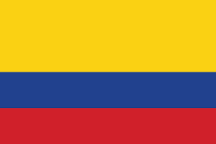
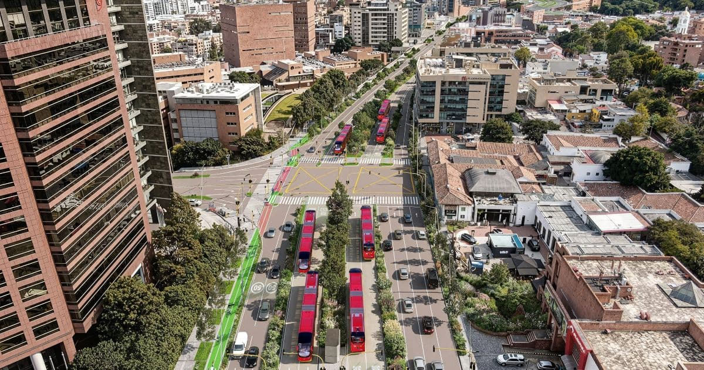

</body>display:
<ul> 
</html>
    
<!DOCTYPE html>
<html lang="pt-BR">
<head>
    <meta charset="UTF-8">
    <meta name="viewport" content="width=device-width, initial-scale=1.0">

    <meta name="description" content="Conheça curiosidades, cultura, biodiversidade, economia e lugares turísticos da Colômbia.">

    <title>Colômbia | Cultura e Curiosidades</title>
    <link rel="stylesheet" href="style.css">
</head>

<body>

<header class="topo">
    <a class="logo" href="#inicio">🇨🇴 Colômbia</a>

    <nav aria-label="Navegação principal">
        <a href="#curiosidades">Curiosidades</a>
        <a href="#economia">Economia</a>
        <a href="#turismo">Turismo</a>
    </nav>
</header>

<main id="inicio">

    <section class="hero">
        <p class="etiqueta">América do Sul</p>
        <h1>Descubra a Colômbia</h1>
        <p>
            Um país de cores, biodiversidade, tradições e paisagens
            surpreendentes. Conheça alguns dos seus maiores destaques.
        </p>

        <a class="botao" href="#curiosidades">
            Explorar o país ↓
        </a>
    </section>

    <section id="curiosidades" class="secao">
        <h2>Curiosidades sobre a Colômbia</h2>

        <article class="cartao">
            

            <div class="conteudo">
                <h3>Um país cheio de cultura</h3>
                <p>
                    A Colômbia está localizada no norte da América do Sul.
                    Sua identidade reúne influências indígenas, africanas
                    e europeias. O país se destaca pela música,
                    gastronomia, história e diversidade de paisagens.
                </p>
            </div>
        </article>

        <article class="cartao">
            

            <div class="conteudo">
                <h3>Superpotência da biodiversidade</h3>
                <p>
                    A Colômbia está entre os países mais biodiversos
                    do mundo. Possui grande variedade de aves,
                    orquídeas, borboletas e outros seres vivos,
                    graças aos Andes, à Amazônia e às suas regiões
                    costeiras.
                </p>
            </div>
        </article>

        <article class="cartao">
            <div class="conteudo">
                <h3>Carrera Séptima</h3>
                <p>
                    A Carrera Séptima é uma importante via de Bogotá,
                    conhecida por sua história, comércio e espaços
                    frequentados por pedestres. Ela faz parte da vida
                    cultural e urbana da capital colombiana.
                </p>
            </div>
        </article>

        <article class="cartao">
            <div class="conteudo">
                <h3>O esporte tradicional: Tejo</h3>
                <p>
                    O tejo é um esporte tradicional colombiano.
                    Os jogadores lançam discos de metal em direção
                    a um alvo de argila, que pode conter pequenos
                    elementos de pólvora que explodem com o impacto.
                </p>
            </div>
        </article>

        <article class="cartao">
            

            <div class="conteudo">
                <h3>Dois litorais</h3>
                <p>
                    A Colômbia possui litoral no mar do Caribe,
                    ligado ao oceano Atlântico, e no oceano Pacífico.
                    Essa característica favorece a diversidade
                    de paisagens e ecossistemas costeiros.
                </p>
            </div>
        </article>
    </section>

    <section id="economia" class="secao economia">
        <h2>Economia da Colômbia</h2>

        <p>
            A economia colombiana reúne atividades agrícolas,
            industriais, energéticas e de serviços. O país também
            participa do comércio internacional por meio de
            produtos como café, flores, petróleo e carvão.
        </p>

        <div class="grade">
            <article class="bloco">
                <h3>⛏️ Mineração e energia</h3>
                <p>
                    O país produz petróleo, carvão mineral, gás natural
                    e ouro. Esses recursos têm importância para
                    a atividade econômica e as exportações.
                </p>
            </article>

            <article class="bloco">
                <h3>☕ Agricultura</h3>
                <p>
                    A Colômbia é conhecida internacionalmente pelo café
                    e pela produção de flores para o mercado externo.
                </p>
            </article>

            <article class="bloco">
                <h3>🏙️ Serviços e comércio</h3>
                <p>
                    Comércio, saúde, educação, administração pública
                    e serviços financeiros fazem parte da economia.
                </p>
            </article>

            <article class="bloco">
                <h3>📊 Desafios econômicos</h3>
                <p>
                    Entre os desafios estão a desigualdade social,
                    a produtividade, a inflação e o equilíbrio
                    das contas públicas.
                </p>
            </article>
        </div>
    </section>

    <section class="secao">
        <h2>Estatuto do Consumidor</h2>
        <p>
            Na Colômbia, a Lei 1480 de 2011 estabelece regras
            de proteção ao consumidor. As obrigações específicas
            para lojas virtuais dependem da atividade e das
            disposições legais aplicáveis.
        </p>
    </section>

    <section id="turismo" class="secao">
        <h2>Lugares turísticos</h2>

        <div class="grade">
            <article class="bloco">
                <h3>🏘️ Cartagena</h3>
                <p>Arquitetura histórica, ruas coloridas e litoral caribenho.</p>
            </article>

            <article class="bloco">
                <h3>🎨 Medellín</h3>
                <p>Conhecida pela Comuna 13, arte urbana e cultura.</p>
            </article>

            <article class="bloco">
                <h3>⛰️ Bogotá</h3>
                <p>A capital colombiana e o mirante do Cerro de Monserrate.</p>
            </article>

            <article class="bloco">
                <h3>🌊 San Andrés</h3>
                <p>Uma ilha famosa pelas águas cristalinas do Caribe.</p>
            </article>
        </div>
    </section>

    <section class="video">
        <h2>Conheça a Colômbia em vídeo</h2>
        <p>Assista ao vídeo para descobrir mais sobre o país.</p>

        <a
            class="botao"
            href="https://www.youtube.com/watch?v=ZRnkk3EYSTY"
            target="_blank"
            rel="noopener noreferrer">
            Assistir no YouTube ↗
        </a>
    </section>

</main>

<footer>
    <p>Trabalho educativo sobre a Colômbia 🇨🇴</p>
</footer>

</body>
</html>


  <border-radius: 8px; 
  <width: 100%;>
  <height: 100px; >
  <object-fit: cover; 
  <display block; >
  <box-shadow: 0px 4px 8px rgba(0, 0, 0, 0.85); >
}
